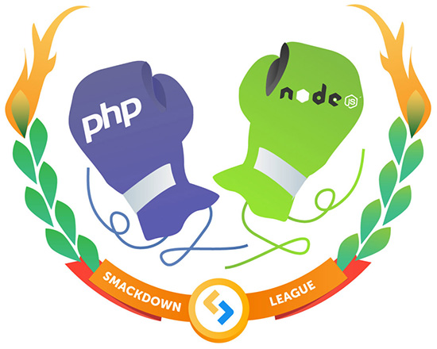

The web is in an era of rapid development. Server-side developers are very confused when choosing a language. There are long-dominant languages such as C, Java, and Perl, and languages focused on web development such as Ruby, Clojure, and Go. As long as your project runs well, your choice doesn't seem that important.

But how can these new web developers make the right choice?
I don't want to start a war between the PHP and Node.js camps. I will compare the development status of these two languages in their respective fields:
- PHP
Rasmus Lerdorf created PHP in 1994. It is run by components installed on web servers (Apache, Nginx). PHP code can be mixed with HTML. Beginners can quickly write valuable code without much practice. This has made PHP increasingly popular; now PHP runs on 80% of servers worldwide. WordPress, a content management system used by a quarter of the world's websites, is written in PHP. - Node.js
Ryan Dahl created Node.js in 2009. It is based on Google's V8 JavaScript engine (which executes client-side JavaScript code in the Chrome browser). Unlike other languages, Node.js has built-in libraries for handling network requests and responses, so you don't need a separate server (Apache, Nginx) or other dependencies. Although Node.js is very new, it quickly gained great popularity. It is used in many large companies, such as Microsoft, Yahoo, LinkedIn, and PayPal.
What about our beloved C#, Java, Ruby, Python, Perl, Erlang, C++, Go, Dart, Scala, Haskell, and so on?
If the article compared the various parameters of all the above languages, it would be very long. Would you still read it? Do you expect a programmer to know all programming languages? That is obviously impossible. I mainly compared PHP and Node.js, for the following main reasons:
- First, they are worth comparing. Both are open source, both are dedicated to web development, and both can be used for similar projects.
- PHP has been around for a long time, but Node.js is just emerging and receiving more and more attention. Should PHP programmers believe the Node.js hype? Should they consider switching languages?
- I understand and love programming languages. I have been using PHP and JavaScript since the 1990s, and also have several years of Node.js experience. Besides that, I have dabbled in other technologies, but I cannot yet make an objective assessment of them here.
Also, it doesn't matter how many languages are compared, because there will always be someone somewhere complaining that I didn't mention their language.
The Battle on SitePoint
Programmers spend a lot of time improving their programming skills. Some people have transferable skills between programming languages, but those who reach a higher level make their own choices based on many factors. On a subjective level, you will promote and defend your technical decisions.
SitePoint Smackdowns doesn't take the "choose what suits you, friend" approach. I will make recommendations based on personal experience, requirements, and preferences. You may not agree with everything I say, and that doesn't matter; what matters is that your opinions will help others make more informed choices.
Evaluation Method
Below, PHP and Node.js will be compared over ten rounds. Each round will consider common development challenges that can be applied to any web technology. We won't go too deep into details; few people care about the value of random number generators or array sorting.
The one that wins the most rounds will be the winner. Ready? Let the battle begin...
Round One: Getting Started
How fast can you create a "Hello World" web page? In PHP:
<?php
echo 'Hello World!';
?>
This code can be placed in any file that can be parsed by the PHP engine – usually a file with a .php extension. Just enter the URL in your browser to navigate to the file.
Admittedly, that's not all. This code can only run on a web server with PHP installed (PHP has a built-in server, but it's still better to use a more robust one). Most operating systems provide server software, such as IIS on Windows, Apache on Mac and Linux, although they require startup and configuration. Pre-built installers such as XAMPP or virtual machine images (such as Vagrant) are often used. A simpler way: upload your files to any web host.
In contrast, installing Node.js is a breeze. You candownload the installeroruse a package manager. Next, let's create a web page in hello.js:
var http = require('http');
http.createServer(function (req, res) {
res.writeHead(200, {'Content-Type': 'text/plain'});
res.end('Hello World!');
}).listen(3000, '127.0.0.1');
Before visiting http://127.0.0.1:3000/ in your browser, you need to type node hello.js in the terminal to start the application. With the five lines of code above, we have created a small web server. Although this is surprising, it is difficult to understand even for people with strong client-side JavaScript experience.
PHP wins this round because it is conceptually simpler. Someone with a little knowledge of PHP statements can develop something useful. PHP has more software dependencies, but the concepts of PHP are less cumbersome for beginners.
Knowing some JavaScript and developing Node.js applications are two different things. Node.js development methods differ from most server-side technologies. You need to first understand some fairly complex concepts, such as closures and callback functions.
Round Two: Help and Support
Without the help of official documentation and resources (courses, forums, Stack Overflow), you will inevitably struggle. PHP easily wins this round; it has a wealth of guides and twenty years of Q&A. No matter what you want to do, someone has already faced the same problem before you.
Node.js has good documentation, but it is younger and offers less help than PHP. JavaScript has been on the market as long as PHP, but most of the help is for browser development, which is basically not helpful here.
Round Three: Language Syntax
Are the declarations and structure logical and easy to use?
Unlike some languages and frameworks, PHP doesn't restrict you to writing in a specific way; it's up to you. You can start with a few lines of code, then add some methods, then write simple PHP4-style objects, and finally build elegant object-oriented MVC-patterned PHP5+ applications. Your code may be messy at first, but it works, and it will get better as you understand more deeply.
PHP's syntax may be slightly adjusted between versions, but backward compatibility is generally well handled. Unfortunately, this also leads to a problem: PHP is messy. For example, how do you count the number of characters in a string? Is it count? str_len? Or strlen? Or mb_strlen? PHP has hundreds of functions, and the naming conventions are not entirely consistent. Try writing a few lines of code without looking at the documentation.
JavaScript is relatively simpler, with only a few dozen core statements. However, its syntax is often criticized by developers because its prototypal object model looks approachable but actually isn't. Also, various math errors (0.1 + 0.2 != 0.3) and messy type coercion ('4' + 2 == '42' and '4' - 2 == 2) have attracted many complaints, but these situations rarely cause problems; most languages have such excuses.
PHP has its advantages, but this round I judge Node.js the winner. The reasons are as follows:
- JavaScript is the most difficult language in the world to understand — but one day when you have an epiphany and the concepts click, you'll find that other languages are too clunky.
- JavaScript code is more concise than PHP. For example, you no longer need to convert back and forth with JSON — nor with UTF-8.
- Full-stack developers can use JavaScript on both the client side and the server side. The brain doesn't need to switch back and forth.
- A deep understanding of JavaScript makes you want to use it more, but that's not the case with PHP.
Round Four: Development Tools
Both technologies have some excellent editors, integrated development environments, debuggers, validators, and other tools. I think this is a tie, but there are some tools that give Node.js a slight advantage: NPM - package manager. NPM allows you to install and manage dependencies, set configuration variables, define scripts, and more.
PHP's Composer project was inspired by NPM and is stronger in some aspects. However, PHP does not provide it by default, its active library is smaller, and its impact on the community is smaller.
NPM also deserves some credit for the growth of build tools like Grunt and Gulp that revolutionized development methods. Sometimes PHP developers may want/need to install Node.js; this is not a step backward.
Round Five: Environment
Where can the technology be used and deployed? Which platforms and ecosystems are supported? Web developers often need to develop applications that are not entirely web-oriented, such as build tools, migration tools, database conversion scripts, etc.
PHP has ways to develop desktop applications and command-line tools, but you wouldn't use them. In essence, PHP is a server-side technology; it excels in that domain but rarely extends beyond it.
Several years ago, JavaScript was considered very restrictive, with some peripheral technologies, but its main battlefield was the browser. Node.js has changed that perception and caused an explosion of JavaScript projects. You can use JavaScript anywhere: browser, server, terminal, desktop, even embedded systems, making JavaScript ubiquitous.
Round Six: Integration
Development technologies are very limited unless they can integrate with databases and drivers. PHP is strong in this area. PHP has been around for many years, and its extensions allow it to communicate directly with servers that have mainstream or obscure APIs.
Node.js is catching up quickly, but you may have a headache finding mature integration components for certain old, obscure technologies.
Round Seven: Hosting and Deployment
How easy is it to deploy your shiny new app to an online web server? This is another complete win for PHP. Contact any random web hosting company and you'll find major PHP support, perhaps with MySQL included for free. For sandboxes, PHP is considered simpler, and risky extensions can be disabled.
Node.js is a different beast; server-side applications run forever. You need a physical/virtual/cloud or customized server environment, preferably with root access, which is out of reach for some servers, especially shared ones; you could bring down the entire server.
Node.js hosting will become simpler, but I don't think it can ever be as convenient as uploading some PHP files via FTP.
Round Eight: Performance
PHP is diligent, and there are many projects and options that can make it faster. Even PHP developers with strict performance requirements rarely worry about speed, but Node.js generally has better performance. Of course, performance largely depends on the experience and dedication of the development team, but Node.js still has the following advantages:
Fewer dependencies
All requests to PHP applications must be routed through a web server to start the PHP interpreter and run PHP code. Node.js doesn't need these dependencies, and you'll almost certainly use a framework with a server, like Express, which is lightweight and serves well as part of your application.
Smaller and faster interpreter
Node.js's interpreter is smaller and more flexible than PHP's. It is not burdened by legacy compatibility issues of older language versions, and Google has done a lot to improve V8 engine performance.
Applications are always online
PHP follows the standard client-server model. Every page request initializes the application; you read configuration parameters, connect to the database, read information, render HTML. Node.js applications run persistently and only need to be started once. For example, you can create a single database connection object and reuse it across all requests. Admittedly, PHP also has ways to achieve this, such as using Memcached, but this is no longer a standard feature of the language.
Event-driven, non-blocking I/O
PHP, like most other server-side languages, uses a blocking execution model. When you execute a command, such as fetching data from a database, you must wait for that command to complete before executing the next content. Node.js usually doesn't wait. Instead, you provide a callback function that will be called once when the command completes. For example:
// fetch records from a NoSQL database
DB.collection('test').find({}).toArray(process);
console.log('finished');
// process database information
function process(err, recs) {
if (!err) {
console.log(recs.length + ' records returned');
}
}
In this example, the console will first output 'finished', then output 'N records returned', because the process function is only called when all data has been returned. In other words, the interpreter can do other things while handling other processes.
Note that the situation is more complex, and there are a few caveats:
- Node.js/JavaScript can only run on a single thread, but most web servers are multi-threaded and handle requests concurrently.
- A long-running JavaScript process by one user will prevent other users' code from executing, unless you split the task or use...Web Workers。
- Benchmarks are subjective and flawed; you can find some examples where Node.js is better, and some contrasting examples where PHP is better. Programmers are just trying to prove their beliefs!
- Writing asynchronous, event-driven code is very complex and challenging.
I can only speak from my experience: my Node.js applications are significantly faster than comparable PHP applications. Yours may not be, but you'll never know without trying.
Round Nine: Developer Passion
This goes beyond the goal of "common web development challenges," but it's important. If you dread writing code every day, then it doesn't matter which language is better.
It's hard to compare this, but some PHP developers are passionate about PHP. When was the last time you read a PHP article or slideshow that touched you? Perhaps no need to say more? Maybe it's lower exposure? Or I haven't looked in the right places? PHP 7 has some new features, but the technology has been stagnant for many years. Even so, few developers complain about PHP.
JavaScript divides the community; some love it, some hate it, and some programmers are undecided in between. Even so, feedback on Node.js is mostly positive. It is at the forefront, partly because it is new, and the praise may not last. For now, Node.js wins this round.
Round Ten: Prospects
It doesn't matter which server-side language you choose to adopt; even if it is no longer updated, it will continue to work (yay ColdFusion!). Although usage is stabilizing, many people still use PHP. I guarantee it can hold on for another twenty years.
Node.js has risen rapidly. It provides a modern development approach, using the same syntax as client-side development while supporting revolutionary HTML5 features such as WebSockets and Server-Sent Events. Despite some controversy over the language's forked functions, Node.js usage is still growing exponentially.
Node.js is bound to eat into PHP's market share, but I don't think it can completely replace it. Both technologies have a bright future. I declare this round a tie.
Final Winner
Final score: Node.js wins 5 rounds, PHP wins 4 rounds, one tie. I thought it would lean to one side, but the result is more moderate than I expected.
Node.js has a certain learning curve, not ideal for beginners, but it won this matchup. Moreover, if you are a solid JavaScript programmer who likes the language, Node.js won't let you down. It is more modern and offers its own web development experience; you won't miss PHP.
But don't disparage PHP; PHP is still vibrant. You shouldn't jump on the Node.js bandwagon just because Node.js is faster, newer, or trendier. PHP is easy to learn and still supports professional programming techniques. Help is everywhere and development is simple. Even die-hard Node.js developers have to consider using PHP for simple websites and applications.
My advice is: evaluate the options, choose a language based on your needs, which is much more reliable than "comparison" articles like this one.
Source: http://www.oschina.net/translate/php-vs-node-js
Click me to share notes
<p style="font-size:14px;">Notes need to be an extension of the content of this article!</p><br> <p style="font-size:12px;"><a href="../tougao.html" target="_blank">Article submission, click here</a></p> <p style="font-size:14px;"><a href="./runoob-user-test-intro.html" target="_blank">How to get a registration invitation code</a></p> <h3 class="text-muted"><i class="fa fa-info-circle" aria-hidden="true"></i> You must <a href=".." class="runoob-pop">log in</a> before sharing notes!</h3> <p><a href="./runoob-user-test-intro.html" target="_blank">How to get a registration invitation code</a></p>